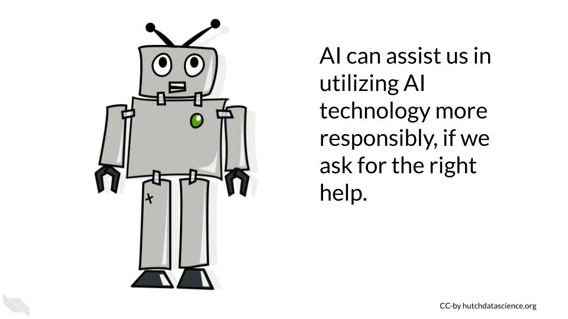

Chapter 16 Introduction to Avoiding AI Harm
This content was adapted from our course on AI for Efficient Programming. If you intend to use AI for writing code, we recommend that you review this content for a deeper dive into ethics specifically for writing code with generative AI.
The use of artificial intelligence (AI) and in particular, generative AI, has raised a number of ethical concerns. We will highlight several current concerns, however please be aware that this is a dynamic field and the possible implications of this technology is continuing to develop. It is critical that we as a society continue to evaluate and predict what the consequences of the use of AI will be, so that we can mitigate harmful effects.

16.1 Learning Objectives
In this chapter we will demonstrate how to:
- Describe key ethical concerns for using AI tools
- Identify possible mitigation strategies for these major concerns
- Explain the potential benefits of being transparent about the use of AI tools to write code
- Discuss why human contributions are still important and necessary
- Recognize strategies for using AI tools more responsibly
- Implement prompts to ask AI tools about responsible use
16.2 Major concerns
In this chapter we will discuss the following issues that using AI tools may contribute to:
- Replacing Humans - AI tools can help humans, but they are not a replacement. Humans are still much better at generalizing their knowledge to other contexts.
- Inappropriate Uses - There are situations in which using AI might not be appropriate now or in the future, in which as a society we may decide humans should always be involved.
- Bias - AI models are built on data and code that were created by biased humans, thus bias can be further perpetuated.
- Misinformation and Faulty Responses - Fake or manipulated data used to help design algorithms could be believed to be correct and this could be further propagated. Text, code, etc. provided to users may not be correct or optimal for a given situation, and may have at times severe downstream consequences.
- Security or Privacy Issues - Uploading, pasting or typing in proprietary or private data, code, text, images or other files into commercial generative AI tools may be leaked not only to the developers of the commercial tool, but potentially also to other users.
- Copyright Violations - AI model responses are often not transparent about using code, text, images and other data types that may violate copyright.
- Harmful or Toxic Responses - Currently it is not clear how well generative AI models restrict harmful responses in terms of ideas, code, text, etc.
- Same Tool Over-reliance - Using a variety of tools can help reduce the potential for ethical issues that may be specific to one tool, such as bias, misinformation, and security or privacy issues.
- Lack of Education - To actually comply with ethical standards, it is vital that users be educated about best practices for use. If you help set standards for an institution or group, it strongly advised that you carefully consider how to educate individuals about those standards.
Note that this is an incomplete list; additional ethical concerns will become apparent as we continue to use these new technologies. We highly suggest that users of these tools careful to learn more about the specific tools they are interested in and to be transparent about the use of these tools, so that as new ethical issues emerge, we will be better prepared to understand the implications.
Be transparent about what AI tools you use where possible. This help others to better understand how you created any content that was derived by AI, as well as the possible sources that the AI tools might have used when helping you. It may also help with future unknown issues related to the use of these tools.
Keep in mind that some fields, organizations, and societies have guidelines or requirements for using AI, like for example the policy for the use of large language models for the International Society for Computational Biology. Be aware of the requirements/guidelines for your field.
It is essential to address these ethical concerns and ensure that AI is used in a responsible and transparent manner. This could be done through ensuring the quality of training for AI systems, promoting transparency about AI-generated content, and implementing safeguards against the creation of harmful or biased content. By doing so, we can harness the potential of AI to improve and transform the way we work while maintaining ethical standards.
Recognize that the ethical guidelines and standards for your field should be considered when using AI or creating AI use policies.
16.3 Replacing Humans
Those who use AI tools need to recognize their own value in the process. While AI systems are useful, they do not replace the strengths that humans have for innovating new ideas or methods, for evaluating how the content generated by AI integrates into the larger picture of a project, or in evaluating the downstream consequences of the content.
Computer science is a field that has historically lacked diversity. It is critical that we support diverse new learners of computer science, as we will continue to need human involvement in the development and use of AI tools. This can help to ensure that more diverse perspectives are accounted for in our understanding of how these tools should be used responsibly.
16.3.1 Tips for supporting human contributions
- Avoid thinking that content by AI tools must be better than that created by humans, as this is not true.
- Recall that humans wrote the code to create these AI tools and that the data used to train these AI tools also came from humans. Many of the large commercial AI tools were trained on websites and other content from the internet.
- Be transparent where possible about when you do or do not use AI tools, give credit to the humans involved as much as possible.
A new term in the medical field called AI paternalism describes the concept that doctors (and others) may trust AI over their own judgment or the experiences of the patients they treat. This has already been shown to be a problem with earlier AI systems intended to help distinguish patient groups. Not all humans will necessarily fit the expectations of the AI model if it is not very good at predicting edge cases (Hamzelou n.d.). Therefore, in all fields it is important for us to not forget our value as humans in our understanding of the world.
16.4 Inappropriate Uses
There are situations in which we may, as a society, not want an automated response. There may even be situations in which we do not want to bias our own human judgment by that of an AI system. There may be other situations where the efficiency of AI may also be considered inappropriate. While many of these topics are still under debate and AI technology continues to improve, we challenge the readers to consider such cases given what is currently possible and what may be possible in the future.
Some reasons why AI may not be appropriate for certain situation include:
- Despite the common misconception that AI systems have clearer judgement than humans, they are in fact typically just as prone to bias and sometimes even exacerbate bias (Pethig and Kroenung (2023)). There are some very mindful researchers working on these issues in specific contexts and making progress where AI may actually improve on human judgement, but generally speaking AI systems are currently typically biased and reflective of human judgement but in a more limited manner based on the context in which they have been trained.
- AI systems can behave in unexpected ways (Gichoya et al. (2022)).
- Humans are still better than AI at generalizing what they learn for new contexts.
- Humans can better understand the consequences of discussions from a humanity standpoint.
Some examples where it may be considered inappropriate for AI systems to be used include:
- In the justice system to determine if someone is guilty of a crime or to determine the punishment of someone found guilty of a crime.
- It may be considered inappropriate for AI systems to be used in certain warfare circumstances.
16.4.1 Tips for avoiding inappropriate uses
- Stay up-to-date on current practices and standards for your field, as well as up-to-date on the news for how others have experienced their use of AI.
- Stay involved in discussions about appropriate uses for AI, particularly for policy.
- Begin using AI slowly and iteratively to allow time to determine the appropriateness of the use. Some issues will only be discovered after some experience.
- Involve a diverse group of individuals in discussions of intended uses to better account for a variety of perspectives.
- Seek outside expert opinion whenever you are unsure about your AI use plans.
- Consider AI alternatives if something doesn’t feel right.
16.5 Bias
One of the biggest concerns is the potential for AI to create biased code. AI systems are trained on data created by humans. If this data used to train the system is biased (and this includes existing code that may be written in a biased manner), the resulting content from the AI tools could also be biased. This could lead to discrimination, abuse, or neglect for certain groups of people, such as those with certain ethnic or cultural backgrounds, genders, ages, sexuality, capabilities, religions or other group affiliations.
It is well known that data and code are often biased (Belenguer 2022). The resulting output of AI tools should be evaluated for bias and modified where needed. Please be aware that because bias is intrinsic, it may be difficult to identify issues. Therefore, people with specialized training to recognize bias should be consulted. It is also vital that evaluations be made throughout the software development process of new AI tools to check for and consider potential perpetuation of bias.
16.5.1 Tips for avoiding bias
- Be aware of the biases in the data that is used to train AI systems.
- Check for possible biases within data used to train new AI tools.
- Are there harmful data values? Examples could include discriminatory and false associations.
- Are the data adequately inclusive? Examples could include a lack of data about certain ethnic or gender groups or disabled individuals, which could result in code that does not adequately consider these groups, ignores them all together, or makes false associations.
- Are the data of high enough quality? Examples could include data that is false about certain individuals.
- Evaluate the code for new AI tools for biases as it is developed. Check if any of the criteria for weighting certain data values over others are rooted in bias.
- Consider the possible outcomes of the use of content created by AI tools. Consider if the content could possibly be used in a manner that will result in discrimination.
See Belenguer (2022) for more guidance. We also encourage you to check out the following video for a classic example of bias in AI:
For further details check out this course on Coursera about building fair algorithms. We will also describe more in the next section.
16.6 Misinformation and Faulty Responses
AI tools use data that may contain false or incorrect information and may therefore respond with content that is also false or incorrect.
This is due to number of reasons:
- AI tools may “hallucinate” fake response based on artifacts of the algorithm
- AI tools may be trained on data that is out-of-date
- AI tools may be trained on data that has fake or incorrect information
- AI tools are not necessarily trained for every intended use and may therefore may not reflect best practices for a given task or field
AI tools may also report data as if it is real, when it is in fact not real. For example, currently at the time of the writing of this course, ChatGPT will report citations with links that are not always correct. Furthermore, AI models can “hallucinate” incorrect responses based on artifacts of the algorithm underneath the tool. These responses are essentially made up by the tool. It is difficult to know when a tool is hallucinating especially if it is a tool that you did not create, therefore it is important to review and check responses from AI tools. There is also a risk that content written with AI tools, may be incorrect or inappropriate for the given context of intended use, or they may not reflect best practices for a given context or field. The tools are limited to the data they were trained on, which may not reflect your intended use.
It is also important to remember that content generated by AI tools is not necessarily better than content written by humans. It requires just as much, if not more review.
16.6.1 Tips for reducing misinformation & faulty responses
- Be aware that some AI tools currently make up false information based on artifacts of the algorithm called hallucinations or based on false information in the training data.
- Do not assume that the content generated by AI is real or correct.
- Realize that AI is only as good or up-to-date as what it was trained on, the content may be generated using out-of-date data. Look up responses to ensure it is up-to-date.
- In many cases utilizing multiple AI tools can help you to cross-check the responses (however be careful about the privacy of each tool if you use any private or propriety data in your prompts!).
- Ask the AI tools for extra information about if there are any potential limitations or weaknesses in the responses, but keep in mind that the tool may not be aware of issues and therefore human review is required. The information provided by the tool can however be a helpful starting point.
Are there any limitations associated with this response?
What assumptions were made in creating this content?
Stack Overflow, a popular community-based website where programmers help one another, has (at the time of writing this) temporarily banned users from answering questions with AI-generated code. This is because users were posting incorrect answers to questions. It is important to follow this policy (as you may face removal from the community). This policy goes to show that you really need to check the code that you get from AI models. While they are currently helpful tools, they do not know everything.
16.7 Lack of Interpretability
There is risk in using AI tools, that we may encounter situations where it is unclear why the AI system came to a particular result. AI systems that use more complicated algorithms can make it difficult to trace back the decision process of the algorithm. Using content created or modified by AI, could make it difficult for others to understand if the content is adequate or appropriate, or to identify and fix any issues that may arise.
This could result in negative consequences, such as for example reliance on a system that distinguishes consumers or patients based on an arbitrary factor that is actually not consequential. Decisions based on AI responses therefore need to be made extra carefully and with clarity about why the AI system may be indicating various trends or predictions.
16.7.1 Tips for avoiding a lack of interpretability
- Content should be reviewed by those experienced in the given field.
- Ask AI tools to help you understand the how it got to the response that it did, but get expert assistance where needed.
Can you explain how you generated this response?

16.8 Security and Privacy issues
Commercial AI tools are often not designed to protect users from unknowingly submitting prompts that include propriety are private information. Different AI tools have different practices in terms of how they do or do not collect data about the prompts that people submit. They also have different practices in terms of if they reuse information from prompts to other users. Thus if users submit prompts that include propriety or private information, they run the risk of that information being viewable not only by the developers/maintainers of the AI tool used, but also by other users who use that same AI tool. Note that the AI system itself may not be trained on responses for how prompt data is collected or not.
Furthermore, AI tools are not always trained in a way that is particularly conscious of data security. If for example, code is written using these tools by users who are less familiar with coding security concerns, protected data or important passwords may be leaked within the code itself. AI systems may also utilize data that was actually intended to be private.
It is also important to consider what data your the responses that you get from an AI tool might actually be using.
16.8.1 Tips for reducing security and privacy issues
- Check that no sensitive data, such as Personal Identifiable Information (PII) or propriety information becomes public through prompts to commercial AI systems.
- Consider purchasing a license for a private AI system if needed or create your own if you wish to work with sensitive data (seek expert guidance to determine if the AI systems are secure enough).
- Promote for regulation of AI tools by voting for standards where possible.
- Ask AI tools for help with security when using commercial tools, but to not rely on them alone. In some cases, commercial AI tools will even provide little guidance about who developed the tool and what data it was trained on, regardless of what happens to the prompts and if they are collected and maintained in a secure way.
- Consult with an expert about data security if you want to design or use a AI tool that will regularly use private or propriety data.
Are there any possible data security or privacy issues associated with the plan you proposed?
16.9 Violating Copyright
When AI systems are trained on data, they may also learn and incorporate copyrighted information. This means that AI-generated content could potentially infringe on the copyright of the original author. For example, if an AI system is trained on a code written by a human programmer, the AI system could generate code that is identical to or similar to the code from that author. If the AI system then uses this code without permission from the original author, this could constitute copyright infringement.
Similarly, AI systems could potentially infringe on intellectual property rights by using code that is protected by trademarks or patents. For example, if an AI system is trained on a training manual that contains code that is protected by a trademark, the AI system could generate code that is identical to or similar to the code in the training manual. If the AI system then uses this code without permission from the trademark owner, this could constitute trademark infringement.
16.9.1 Tips for avoiding copyright violations
- Be transparent about what AI tools you use to write your code.
- Obtain permission from the copyright holders of any content that you use to train an AI system. Only use content that has been licensed for use.
- Cite all content that you can.
- Ask the AI tools if the content it helped generate used any content that you can cite.
Did this content use any content from others that I can cite?
16.10 Harmful or Toxic Responses
Another major concern is the use of AI to generate malicious content or that AI itself may accidentally create harmful responses. For instance, AI could start suggesting the creation of code that spreads malware or hacks into computer systems. Another issue is what is called “toxicity”, which refers to disrespectful, rude, or hateful responses (Nikulski (2021)). These responses can have very negative consequences for users. Ultimately both issues could cause severe damage to individuals and organizations, including data breaches and financial losses. AI systems need to be designed with safeguards to avoid harmful responses, to test for such responses, and to ensure that the system is not infiltrated by additional possibly harmful parties.
16.10.1 Tips for avoiding the creation of harmful content
- Be careful about what commercial tools you employ, they should be transparent about what they do to avoid harm.
- If designing a system, ensure that best practices are employed to avoid harmful responses. This should be done during the design process and should the system should also be regularly evaluated. Some development systems such as Amazon Bedrock have tools for evaluating toxicity to test for harmful responses. Although such systems can be helpful to automatically test, evaluation should also be done directly by humans.
- Be careful about the context in which you might have people use AI - will they know how to use it responsibly?
- Be careful about what content you share publicly, as it could be used for malicious purposes.
- Consider how the content might be used by others.
- Ask the AI tools to help you, but do not rely on them alone.
What are the possible downstream uses of this content?
What are some possible negative consequences of using this content?
16.11 Same Tool Over-reliance
Only using one AI tool can increase the risk of the ethical issues discussed. For example, it may be easier to determine if a tool incorrect about a response if we see that a variety of tools have different answers to the same prompt. Secondly, as our technology evolves, some tools may perform better than others at specific tasks. It is also necessary to check responses over time with the same tool, to verify that a result is even consistent from the same tool.
16.11.1 Tips for avoiding over-reliance
- Check that each tool you are using meets the privacy and security restrictions that you need.
- Utilize platforms that make it easier to use multiple AI tools, such as https://poe.com/, which as access to many tools, or Amazon Bedrock, which actually has a feature to send the same prompt to multiple tools automatically, including for more advanced usage in the development of models based on modifying existing foundation models.
- Evaluate the results of the same prompt multiple times with the same tool to see how consistent it is overtime.
- Use slightly different prompts to see how the response may change with the same tool.
- Consider if using different types of data maybe helpful for answering the same question.
16.12 Lack of education
There are many studies indicating that individuals typically want to comply with ethical standards, but it becomes difficult when they do not know how (Giorgini et al. (2015)). Furthermore, individuals who receive training are much more likely to adhere to standards (Kowaleski, Sutherland, and Vetter (2019)).
Properly educating those you wish to comply with standards, can better ensure that compliance actually happens.
It is especially helpful if training materials are developed to be especially relevant to the actually potential uses by the individuals receiving training and if the training includes enough fundamentals so that individuals understand why policies are in place.
Example 16.1 Real World Example
A lack of proper training at Samsung lead to a leak of proprietary data due to unauthorized use of ChatGPT by employees – see https://cybernews.com/news/chatgpt-samsung-data-leak for more details:
“The information employees shared with the chatbot supposedly included the source code of software responsible for measuring semiconductor equipment. A Samsung worker allegedly discovered an error in the code and queried ChatGPT for a solution.
OpenAI explicitly tells users not to share “any sensitive information in your conversations” in the company’s frequently asked questions (FAQ) section. Information that users directly provide to the chatbot is used to train the AI behind the bot.
Samsung supposedly discovered three attempts during which confidential data was revealed. Workers revealed restricted equipment data to the chatbot on two separate occasions and once sent the chatbot an excerpt from a corporate meeting. Privacy concerns over ChatGPT’s security have been ramping up since OpenAI revealed that a flaw in its bot exposed parts of conversations users had with it, as well as their payment details in some cases. As a result, the Italian Data Protection Authority has banned ChatGPT, while German lawmakers have said they could follow in Italy’s footsteps.”
16.12.1 Tips to avoid a lack of education
- Emphasize the importance of training and education
- Recognize that general AI literacy to better understand how AI works, can help individuals use AI more responsibly.
- Seek existing education content made by experts that can possibly be modified for your use case
- Consider how often people will need to be reminded about best practices. Should training be required regularly? Should individuals receive reminders about best practices especially in contexts in which they might use AI tools.
- Make your best practices easily findable and help point people to the right individuals to ask for guidance.
- Recognize that best practices for AI will likely change frequently in the near future as the technology evolves, education content should be updated accordingly.
16.13 Summary
Here is a summary of all the tips we suggested:
- Disclose when you use AI tools to create content.
- Be aware that AI systems are biased and their responses are likely biased. Any content generated by an AI system should be evaluated for potential bias.
- Be aware that AI systems may behave in unexpected ways. Implement new AI solutions slowly to account for the unexpected. Test those systems and try to better understand how they work in different contexts.
- Be aware that humans are still better at generalizing concepts to other contexts.
- Carefully consider if an AI solution is appropriate for your context.
- Credit human authors by citing them and adhering to copyright restrictions.
- Ensure that prompts to commercial tools don’t include private or propriety data or information.
- Cross-check content from AI tools by using multiple AI tools - but check that each tool meets the privacy and security restrictions that you need.
- Don’t assume AI-generated content is real, accurate, consistent, current, or better than that of a human.
- Ask the AI tools to help you understand:
- Sources for the content that you can cite
- Any decision processes in how the content was created
- Potential limitations
- Potential security or privacy issues
- Potential downstream consequences of the use of the content
- Always have expert humans review the content and value your own contributions and thoughts.
- Emphasize training and education about AI and recognize that best practices will evolve as the technology evolves.
Overall, we hope that these guidelines and tips will help us all use AI tools more responsibly. We recognize however, that as this is emerging technology and more ethical issues will emerge as we continue to use these tools in new ways. AI tools can even help us to use them more responsibly when we ask the right additional questions, but remember that human review is always necessary. Staying up-to-date on the current ethical considerations will also help us all continue to use AI responsibly.